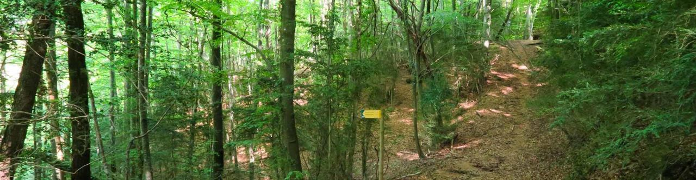

Ruta · Sant Joan
Bonic itinerari de muntanya mitjana on gaudirem del contrast vegetal entre boscos de tardor com les fagedes i alzinars sempre verds, al solell del Puig de Castelltallat. Pel recorregut anirem…